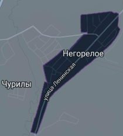
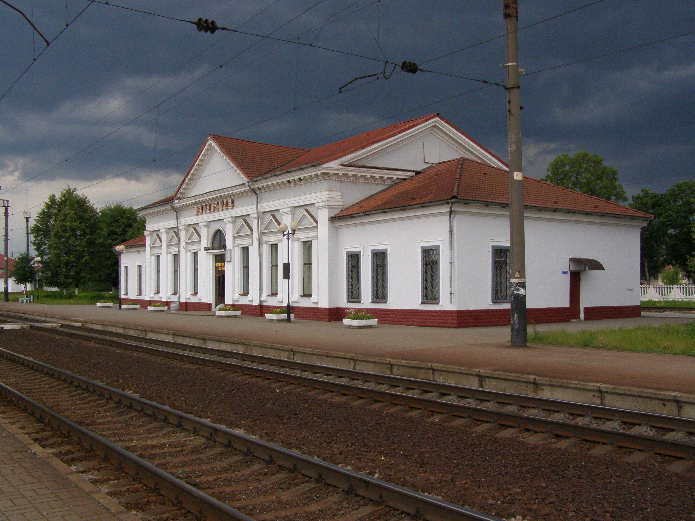
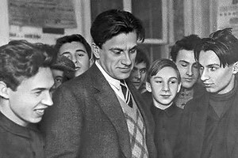
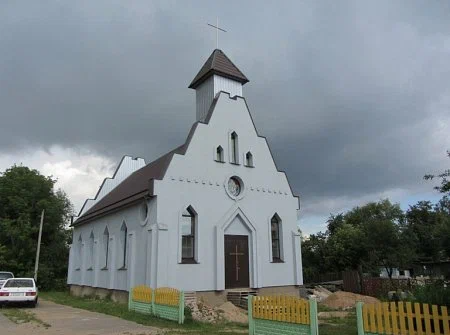
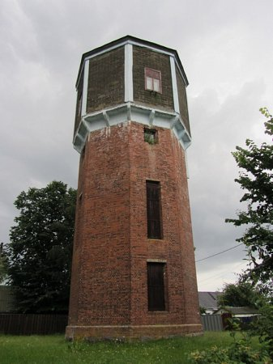
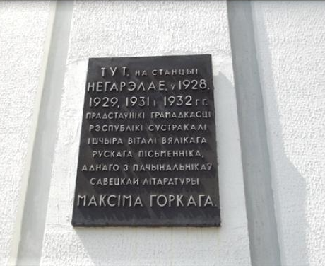

Агрогородок (ранее посёлок городского типа) Негорелое известен с XVI века как почтовая станция. После последнего раздела Речи Посполитой в 1793 г. Негорелое перешло в состав Российской империи. С 1588 г. до подавления польского восстания (1831 г.) принадлежало Койдановскому графству Радзивилов. Позже (было это позже аж в 1871 г.) через Негорелое прошла Московско-Брестская ЖД, а как мы знаем, где есть железные дороги, там есть и железнодорожные станции - в нашем случае станция Негорелое.
Жители Негорелого принимали участие в революции 1905-1907гг. Через год после окончания революции стало работать народное училище. В конце 1917 г. была установлена Советская власть. В 1918 году была провозглашена БНР, однако находилась она под контролем германской военной администрации, но пробыла она под этим контролем не долго, а точнее до начала 1919 г. Ведь в январе этого года вошла в состав ССРБ, но уже в январе была в Литовско-Белорусской ССР. Неприятно, но летом такого хорошего для Беларуси года была занята польскими войсками, а после подписания рижского мира перешла в состав БССР.
С 1921 по 1939гг. станция Негорелое была пограничной и имела свою заставу и таможню. В данный временной промежуток через Негорелое проезжало по 10 000 человек в год. И именно через Негорелое проезжали Максим Горький, Владимир Маяковский и другие. Кстати именно о Негорелом Маяковский написал эти строки:
Граница.
Скука польская.
Дальше - больше.
От дождика скользкая
Почва Польши.
На горизонте -
Белое.
Снега и Негорелое.
В годы ВОВ немцы основали в Негорелом концлагерь для военнопленных. Находилось Негорелое под оккупацией нацистов с 28 июня 1941 г. по 6 июля 1944 г. Однако даже оккупация не сильно-то и мешала развитию партизанской деятельности в посёлке. В годы оккупации тут находился немецкий гарнизон в 1161 человека, состоящий из оргкомендатуры (61 человек), карательного отряда (220 человек), военной связи (120 человек), отряда "лесорубов" (220 человек), железнодорожников (30 человек), жандармерии (10 человек), полицейских (11 человек), охраны моста через реку Перетуть (60 человек).
В послевоенное время Негорелое стало застраиваться по генеральному плану 1972 г. Три жилых масссива расположены между фвтомобильной и ЖД магистралями. В Негорелом преобладают одноэтажные здания, но так же есть несколько 2-х и 3-х -этажных жилых домов.
Список достопримечательностей
В Негорелом достаточно много достопримечательностей и во их список
Электростанция (1937 года постройки)
Водонапорная башня начала XX века
Железнодорожные служебные постройки конца XIX—начала XX веков
Дом офицерского состава погранзаставы (1922 года постройки)
Костёл Преображения Господнего
Братская могила советских солдат
Мемориальная доска Максиму Горькому на здании вокзала
География
Стоит Негорелое на реке Перетуть в 48 км от Минска, в 10 км от Дзержинска. Находится в Дзержинском районе Минской области Площадь агрогородка составляет 1.13 кв. км
Есть улицы:
Ленинская
Набережная
Октябрьская
Октябрьский переулок
улица Тельмана
Школьная
Школьный переулок
Садовая
Заводская
Вокзальный переулок
Значимые объекты:
ДК Негорелое
Ульевой и воскоперерабатывающий завод
Музей истории станции Негорелое
Музей "Дом природы"
Негореьский лесхоз
СШ №1
СШ №2
Иллюстрации
Негорелое на карте

Здание Негорельского вокзала (оно же в прошлом здание погранзаставы)

Mаяковский в негорелом

Костёл преображения Господнего в Негорелом

Та самая водонапорная башня начала ХХ века

Мемориальная доска Максиму Горькому

Небольшой такой тест
Впишите цифру правильного ответа:
Когда Негорелое перешло в состав Российской империи?
В 1793 г.
В 1893 г.
В 1773 г.
В каком году через Негорелое прошла Московско-Брестская ЖД?
В 1931 г.
В 1781 г.
В 1871 г.
На какой реке стоит Негорелое?
Птичь
Перетуть
Перетамь
До какого года БНР, а с ней и Негорелое, находилась под контролем германской военной администрации?
До 1991 г.
До 1919 г.
До 1921 г.
Кому посвящена мемориальная табличка на здании вокзала в Негорелом?
Максиму Богдановичу
Владимиру Маяковскому
Якубу Коласу
Кому пренадлежало Негорелое до подавления польского восстания?